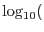

This function may be performed alone by calling the script with entrystage and finalstage=`completeness'.
The main aim of this function is to produce a histogram which shows the fraction of the simulated sources which have been detected, as a function of the flux of the simulated source. One expects this to be close to 1 in the bright limit, but to fall to zero towards the faint end. The flux at which the detected fraction falls to about 1/2 can be considered the sensitivity of the detection technique which was employed. See figure 3 for an example of a plot of cumulative completeness.
Note that any sensitivity figure obtained in this fashion represents an average across the entire mosaiced field of view. Typically the exposure and detected background flux vary greatly over such a mosaic. If precise sensitivity figures are desired it would probably be better to use artificial exposure and background templates, in which the pixel values for each instrument and energy band were either constant 0 or 0. The non-zero area would also need to be the same shape and extent for each instrument.
0 or 0. The non-zero area would also need to be the same shape and extent for each instrument.
The first step performed by the present function is to make a histogram of the occurrence of simulated sources as a function of SIM_FLUX. All the available lists of simulated sources are harvested in this step. The columns created are
Some possibly useful additional columns are next calculated from these:
Now it is time to tally up the detections. However, we need now to make a distinction between detections which are likely to be `genuine' and those which are not. `Genuine' is a somewhat slippery concept in present application, but we do have a quantity which we can use to get a handle on it, namely the probability MATCH_PNULL that the match between a detection and its matching simulated source could have occurred by chance. We define a cutoff value of MATCH_PNULL and declare that all those detections for which MATCH_PNULL falls below the cutoff are genuine, and the others not. The cutoff is under user control via the parameter probcutoff of eimsimreduce. Detected sources for which SIM_INV_SENSY = 0 are also screened out at this stage.
The situation is actually even a little bit more complicated, due to the fact that, although we may be fairly confident that genuine detections have small values of MATCH_PNULL, spurious detections have values which are evenly spread between 0 and 1. This means that our initial tally of detections with MATCH_PNULL below the cutoff
comprises not the total number of reliable detections, out of a total  , but
- ie there are some black sheep among the white. is thus calculated from as
, but
- ie there are some black sheep among the white. is thus calculated from as
The next batch of columns to be calculated are as follows:
The desired result is then calculated and expressed in the final three columns:
A last function of this task is to append to the output dataset a table named THEORY, which is a version of the SRCSPECS table of the sim source specification template designed to make it easy to compare the theoretical logN-logS of the simulated sources with the actual logN-logS. You can do this for example using the ftool fv. If you plot first DENS_SIM_INT against SIM_FLUX_INT; then overlay this with a second plot, of THEORY columns DENSITY against FLUX; then change the axes scales to log-log; you will see what I mean.
PLEASE NOTE if you do this that the real distribution will very often appear not to match the theoretical logN-logS very well at the bright end of the scale. Such deviations appear more significant than they really are, because the brain expects the values in adjacent flux bins to be statistically independent, which is not true of a cumulative plot. A comparison of differential plots is often much more satisfying.